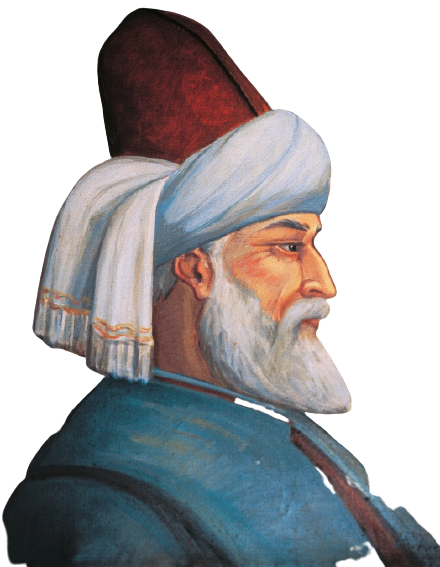
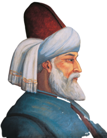

Build
Imam Al-Ghazālī was born in 1058 ce in the small village of Tus,
near the town of Masshad in Persia (modern-day Iran). His name was
Abu Hamid Muhammad Ibn Muhammad Al-Ghazali أَبُو حَامِدٍ مُحَمَّدُ
بْنُ مُحَمَّدٍ ٱلطُّوسِيُّ ٱلْغَزَالِيُّ He may have been named
after his father's business, as ghazzali means "wool merchant." His
father was a Sufi. He had several sisters and a brother, Ahmad, who
became a Sufi poet. Al-Ghazālī's father died when he was very young,
and he and his brother were left in the care of a Sufi friend, Ahmad
al-Radkhani, who had promised to educate the boys. Economic
conditions were not good, but by the age of fifteen, arrangements
had been made for al-Ghazālī to continue his studies with a leading
scholar, Abu Nasr al-Ismaʾili, in the region of Jurgan, on the
Caspian Sea.
Al-Ghazālī would later note in his autobiography, al-Munkidh min
al-Dalal (Deliverance from Error), that he was more ambitious than
religious as a young man. He pursued a scholarly religious path at
first because that was what was available to a young man with little
money or family standing. So, while studying with various teachers,
he took notes, but did not bother to consider or memorize the
lessons. One story tells how he was returning to his native Tus from
Jurgan when his group was attacked by bandits. When al-Ghazālī
begged that they not steal his school notebooks, the leader of the
robbers laughed at him. The robber said that obviously al-Ghazālī
was not much of a scholar if all his learning was kept in notebooks
and not in his mind. From this point on, al-Ghazālī memorized his
lessons instead of simply copying them down.
When al-Ghazālī was nineteen he earned a place at a religious
college, or madrasa, in Nishapur, about 50 miles west of Tus. In
Nishapur he studied with one of the major religious scholars of the
generation, Abu al-Malik al-Juwayni (died 1085), also known as Imam
al-Haramayn. Al-Juwayni was the imam, or religious leader, of the
two most sacred cities in Islam, Mecca and Medina. Al-Ghazālī
studied both Islamic law and religion and was introduced to the work
of two earlier Islamic thinkers, Abu al-Nasr al-Farabi (870–950) and
Ibn Sina (980–1037). These men attempted to combine the use of
reason and rational thought developed by ancient Greek philosophers
with the Islamic belief in one supreme being, Allah.
Al-Ghazālī was a bright student and became a favorite of al-Juwayni.
After finishing his studies, he remained for a time at the school
and helped with teaching. The young Muslim scholar soon came to the
attention of the powerful vizier (state official), Nizam al-Mulk
(1018–1092). The minister had built the college in Nishapur, as well
as several others in Persia and what is modern-day Iraq. After the
death of al-Juwayni, Nizam al-Mulk invited al-Ghazālī to come to
Baghdad, in modern-day Iraq, the administrative center of the
Islamic empire.
In Baghdad al-Ghazālī served Nizam al-Mulk as a legal advisor,
taught, wrote, and enjoyed the company of other scholars. In 1091,
at only thirty-three years old, he was named the chief professor at
Baghdad's Nizamiyya college. This was one of the most prominent
positions in the Muslim world. He lectured to large crowds of
students on law and logic. He was noted for giving clear and easily
understood presentations on complicated religious matters. He also
wrote one of his best known works, The Incoherence of the
Philosophers, in which he attempted to reveal the mistakes in the
theories of al-Farabi and Ibn Sina. He believed these earlier
thinkers had relied too much on rational thought, which he felt was
not adequate for understanding concepts such as Allah and infinity,
or something without boundaries.
Al-Ghazālī's philosophy was adopted by a group known as the Kalam
thinkers, who attempted to prove that the universe had a beginning
and therefore was created by Allah. The basic Kalam argument takes
the following form: The universe had a beginning. Everything that
has a beginning has a cause. Therefore, the universe has a cause,
which is Allah. In their rejection of Aristotle 's (384–322 bce; see
entry) theory that the world of matter and motion is eternal, the
Kalam thinkers and al-Ghazālī had much in common.
During his time in Baghdad, Al-Ghazālī also wrote Fada¿ih
al-Batiniyya (The Obscenities of the Esoterics), a critical account
of, among other things, the Assassins, a radical sect of Muslims
organized in the late eleventh century. The Assassins often killed
their enemies by using knives or poison. The name came from their
practice of preparing themselves for their work by using hashishin,
or the drug hashish. The word "assassination" later became used to
describe a planned murder. The Assassins killed a number of
prominent Muslims during al-Ghazālī's years in Baghdad, including
his sponsor, Nizam al-Mulk.
Al-Ghazālī's rise in popularity came to a sudden halt. He suffered a
crisis of belief, and maybe even a nervous collapse. In 1095 he
developed a stutter that prevented him from lecturing and that
ultimately made him mute, or unable to talk. Though he later
recovered his voice and lost the stutter, al-Ghazālī gave up his
teaching position and left Baghdad. It is possible he left the city
in part because he feared being killed, due to his published
criticism of the Assassins. In his autobiography, al-Ghazālī claims
he could no longer stand the dishonesty he found in many of his
fellow scholars. He believed they were more interested in money and
fame than in real learning. He also decided that true religion could
only come through a direct experience with Allah, not through
scholarship. As he wrote in his autobiography: "I apprehended
clearly that the mystics are men who had real experiences, not men
of words, and that I had already progressed as far as possible by
way of intellectual apprehension. What remained for me was not to be
attained by oral instruction and study, but only by immediate
experience and by walking in the mystic way."
Al-Ghazali composed three works on Aristotelian logic, Mi‘yar
al-‘ilm (The Standard Measure of Knowledge), Mihakk al-nazar
f’l-mantiq (The Touchstone of Proof in Logic) and al-Qistas
al-mustaqim (The Just Balance). The first two were written
immediately after the Tahafut `in order to help understanding of the
latter’, and the third was composed after his retirement. He also
gave a detailed account of logic in the long introduction of his
writing on legal theory, al-Mustasfa min ‘ilm al-usul (The
Essentials of Islamic Legal Theory). Al-Ghazali’s great interest in
logic is unusual, particularly when most Muslim theologians were
antagonistic to it, and can be attributed not only to the usefulness
of logic in refuting heretical views (al-Qistas is also a work of
refutation of the Isma‘ilis), but also to his being fascinated by
the exactness of logic and its effectiveness for reconstructing the
religious sciences on a solid basis.
There is a fundamental disparity between al-Ghazali’s theological
view and the Neoplatonic Aristotelian philosophy of emanationism.
Al-Ghazali epitomizes this view in twenty points, three of which are
especially prominent:
(1) the philosophers’ belief in the eternity of the world,
(2) their doctrine that God does not know particulars,
(3) their denial of the resurrection of bodies.
These theses are ultimately reducible to differing conceptions of
God and ontology. Interestingly, al-Ghazali’s criticism of
philosophy is philosophical rather than theological, and is
undertaken from the viewpoint of reason.
First, as for the eternity of the world, the philosophers claim that
the emanation of the First Intellect and other beings is the result
of the necessary causality of God’s essence, and therefore the world
as a whole is concomitant and coeternal with his existence. Suppose,
say the philosophers, that God created the world at a certain moment
in time; that would presuppose a change in God, which is impossible.
Further, since each moment of time is perfectly similar, it is
impossible, even for God, to choose a particular moment in time for
creation. Al-Ghazali retorts that God’s creation of the world was
decided in the eternal past, and therefore it does not mean any
change in God; indeed, time itself is God’s creation (this is also
an argument based on the Aristotelian concept of time as a function
of change). Even though the current of time is similar in every
part, it is the nature of God’s will to choose a particular out of
similar ones.
Second, the philosophers deny God’s knowledge of particulars or
confine it to his self-knowledge, since they suppose that to connect
God’s knowledge with particulars means a change and plurality in
God’s essence. Al-Ghazali denies this. If God has complete knowledge
of a person from birth to death, there will be no change in God’s
eternal knowledge, even though the person’s life changes from moment
to moment.
Third, the philosophers deny bodily resurrection, asserting that
‘the resurrection’ means in reality the separation of the soul from
the body after death. Al-Ghazali criticizes this argument, and also
attacks the theory of causality presupposed in the philosophers’
arguments. The so-called necessity of causality is, says al-Ghazali,
simply based on the mere fact that an event A has so far occurred
concomitantly with an event B. There is no guarantee of the
continuation of that relationship in the future, since the
connection of A and B lacks logical necessity. In fact, according to
Ash‘arite atomistic occasionalism, the direct cause of both A and B
is God; God simply creates A when he creates B. Thus theoretically
he can change his custom (sunna, ‘ada) at any moment, and resurrect
the dead: in fact, this is ‘a second creation’.
Al-Ghazali thus claims that the philosophers’ arguments cannot
survive philosophical criticism, and Aristotelian logic served as a
powerful weapon for this purpose. However, if the conclusions of
philosophy cannot be proved by reason, is not the same true of
theological principles or the teachings of revelation? How then can
the truth of the latter be demonstrated? Herein lies the force of
al-Ghazali’s critique of reason.
The Book of Knowledge is the foundation of the forty books of the Revival of the Religious Sciences, Imam al-Ghazali’s magnum opus. In the Book of Knowledge, he defines knowledge, its relation to faith, theology, and jurisprudence. The book deals with the virtue of knowledge from both rational and traditional points of view. It elucidates the types of knowledge and the nature of people’s obligation to seek knowledge. Imam al-Ghazali defines jurisprudence and theology as branches of Islamic knowledge, then outlines those fields that people incorrectly consider to be Islamic disciplines, and distinguishes the praiseworthy from the blameworthy. He describes in detail the perils of disputation and the reasons people engage in debate and dialectics. He also considers the conduct incumbent on the teacher and student, and warns of the perils that can befall those pursuing knowledge. Finally, Imam al-Ghazali discusses the virtues and categories of the intellect and the prophetic traditions related to it.
The work emphasized the importance of observing the ritual requirements of Islam, the actions that would lead to salvation, and avoidance of sin. The factor that set the Alchemy apart from other theological works at the time was its mystical emphasis on self-discipline and asceticism. Sa'āda (happiness) is a central concept in Islamic philosophy used to describe the highest aim of human striving. Sa'āda is equated with "ultimate happiness", namely that of the hereafter. It is achieved only after a human being has liberated his/her soul completely from its corporal existence, achieving "active intellect". The teachings were to help man to live a life in accordance with the sacred law, and by doing so gain a deeper understanding of its meaning on the day of Judgement.
Al-Ghazali’s relationship with philosophy is subtle and complicated. The philosophy represented by AL-FARABI and IBN SINA (Avicenna) is, for al-Ghazali, not simply an object of criticism but also an important component of his own learning. Imam Ghazali studied philosophy intensively while in Baghdad, composing Maqasid al falasifa (The Intentions of the Philosophers), and then criticizing it in his Tahafut al falasifa (Incoherence of Philosophers). This book was considered a turning point in Islamic history, it is generally thought that from this point onwards philosophy in the Islamic world went on the decline after receiving such a crushing blow from religion in the form of al-Ghazali's writings. This translation is well written and presented in English that is fairly easy to understand
The Revival of the Religious Sciences by Imam al-Ghazālī can be described as a book that will never die. This is because it contains a vital cognitive force that time cannot obliterate. In it the Imam discusses Islamic rulings, beliefs and character, in the style of an admonisher who understands the psyche and its secrets as well as spiritual diseases. What distinguishes this book from others is its strong spiritual influence on the reader which makes him seek both soundness of heart and his Lord's pleasure through acts of worship, rather than the mere performance of acts of worship so that they are legally valid. The book is a comprehensive encyclopaedia for all of a Muslim's religious affairs, including beliefs, acts of worship, dealings and character, as well as for individual and societal welfare. Al-Ghazālī's style is that of one who practices what he knows, one who is determined to rise from the dry, ordinary manner of teaching to one which encourages action. Abū Hāmid al-Ghazālī is a towering figure in Islam. His enormous influence can be summarized, in the words of Annemarie Schimmel, as the one who "teaches... only to help man to live a life in accordance with the sacred law, not by clinging exclusively to its letter, but by an understanding of its deeper meaning ... so that he is ready for the meeting with his Lord at any moment." His greatest work Ihyā' 'Ūlūm al-Dīn (The Revival of the Religious Sciences), comprising forty books divided into four quarters of ten books each, has helped generations towards this end until today.